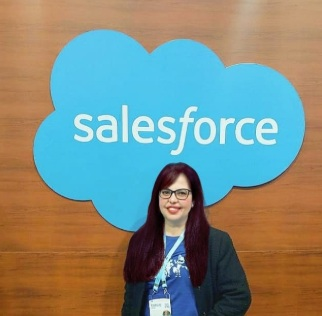

NTT DATA Brasil · Projeto Itaú
Desenvolvedora Salesforce Júnior
Atuação em soluções Salesforce em contexto corporativo, envolvendo desenvolvimento, automação e manutenção de processos de negócio.
DESENVOLVIMENTO DE SOFTWARE · CRM · IA
Desenvolvedora Salesforce com experiência profissional em soluções para processos de negócio. Também desenvolvo projetos autorais com Java, Spring Boot, Angular e PostgreSQL e estudo aplicações de Inteligência Artificial com Java.

UM POUCO SOBRE MIM
Sou desenvolvedora Salesforce e bacharel em Engenharia Civil. Minha trajetória combina tecnologia, gestão de projetos e entendimento de processos de negócio.
Atuei na NTT DATA Brasil, em projeto para o Itaú, com desenvolvimento e manutenção de soluções no ecossistema Salesforce. Entre as tecnologias com que trabalho estão Apex, Lightning Web Components (LWC), SOQL e Flow Builder.
Em paralelo, construo projetos autorais com Java, Spring Boot, APIs REST, Angular e PostgreSQL e venho aprofundando meus estudos em agentes de Inteligência Artificial desenvolvidos com Java.
Sou certificada Salesforce Platform Foundations, Triple Star Ranger no Trailhead e estou me preparando para a certificação Platform Developer I.
TRAJETÓRIA PROFISSIONAL
Desenvolvedora Salesforce Júnior
Atuação em soluções Salesforce em contexto corporativo, envolvendo desenvolvimento, automação e manutenção de processos de negócio.
Atuação autônoma
Experiência anterior em projetos e processos na área de construção civil, que complementa minha visão de negócio e organização de entregas.
As descrições resumem as áreas de atuação. Em entrevistas, detalho atividades e entregas específicas conforme o projeto.
PRÁTICA E EVOLUÇÃO TÉCNICA
Projetos autorais e de estudo que demonstram minha prática com plataformas CRM, desenvolvimento Full Stack e aplicações de IA.
Projeto Salesforce para o contexto imobiliário, com modelagem de dados, automações e desenvolvimento com Apex e SOQL. Inclui estudos e implementações com LWC, testes e recursos da plataforma.
Conhecer projetoAplicação autoral com API REST em Spring Boot, arquitetura em camadas, persistência PostgreSQL com JPA e frontend Angular.
Conhecer projetoProjetos de estudo com Java e Spring Boot para explorar orquestração de agentes e recuperação de informações. O escopo de cada recurso é identificado conforme sua implementação.
Conhecer projetosConceito de CRM voltado à construção civil, conectando minha formação em Engenharia Civil à modelagem de dados e aos processos de negócio.
Ver projetoSolução para gestão de concessionária de motocicletas, com objetos personalizados, automações e processos relacionados às vendas.
Ver projetoAPI REST para sistema de entregas, descrita no projeto com Spring Boot, operações CRUD e autenticação JWT.
Ver projetoTECNOLOGIAS E FERRAMENTAS
Apex, Lightning Web Components (LWC), SOQL, Flow Builder, objetos e campos personalizados, regras de validação, classes de teste e Agentforce em aprendizado.
Java 21, Spring Boot, APIs REST, Spring Data JPA, PostgreSQL, Angular, TypeScript, HTML, CSS e Docker em projetos e estudos práticos.
Estudos de agentes de IA com Java, engenharia de requisitos apoiada por IA e exploração de padrões como RAG conforme o estágio de cada projeto.
Modelagem de processos, automação, documentação, testes, análise de requisitos e organização de projetos.
FORMAÇÃO CONTÍNUA
Certificação conquistada.
Preparação para a certificação.
Reconhecimento de progresso na plataforma Trailhead.
Formação em arquitetura/agentes de IA com Java e workshop de IA aplicada à Engenharia de Requisitos.
MBA em Gestão de Obras (IPOG) e pós-graduações em áreas de gestão e engenharia urbana.
Centro Universitário do Norte – UNINORTE.
VAMOS CONVERSAR?
Estou aberta a oportunidades em Salesforce, desenvolvimento de software e soluções tecnológicas.